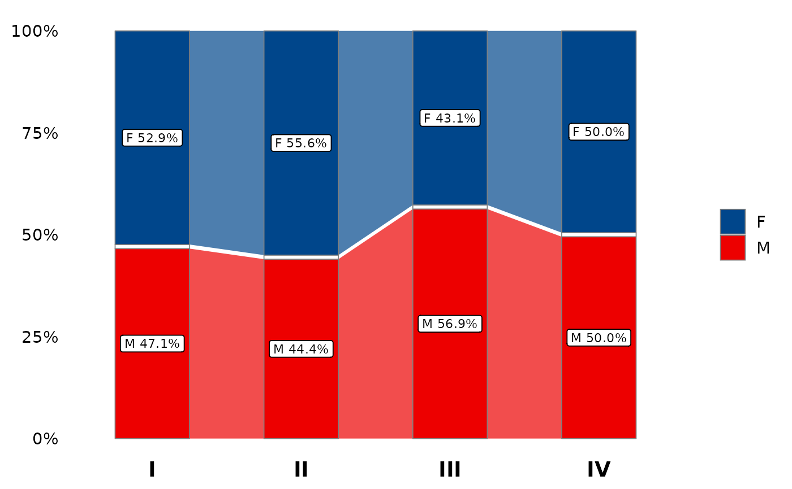

Visualise the cross-distribution of categorical variables. With 2 variables
the plot is an **alluvial / Sankey flow** (default) or a **stacked
proportion bar**, selected via type; with 3 variables it is a **tile
heatmap**. The alluvial mode uses [plt_alluvial()], so it supports native
faceting and only requires the suggested ggalluvial package.
Usage
plt_dist(
data,
dis_vars,
type = c("alluvial", "bar"),
facet = NULL,
color = NULL,
alpha = 0.7,
label = c("count_percent", "count", "percent", "none"),
gap = 0.01,
curve_type = "linear",
theme_use = theme_heat(14)
)Arguments
- data
A data frame.
- dis_vars
Character vector of variable names.
2 variables:
c(x, fill)\(\rightarrow\) alluvial flow (type = "alluvial", default) or stacked bar (type = "bar").3 variables:
c(x, y, fill)\(\rightarrow\) tile heatmap (typeignored).
- type
Plot type for the 2-variable case:
"alluvial"(default) or"bar"(stacked proportion bar). Ignored whendis_varshas 3 variables.- facet
Optional faceting variable name (string). Used by both 2-variable plot types; ignored for the 3-variable heatmap.
- color
Colour specification, resolved by the internal colour resolver:
NULL(defaultpal_lancet), a registered palette name (e.g."Paired"), a single literal colour, or a vector of colours. In alluvial mode these are passed to [plt_alluvial()].- alpha
Colour transparency. Default 0.7. In alluvial mode this is the flow ribbon transparency (
flow.alpha).- label
Label content, one of
"count_percent"(default),"count","percent","none". For the **bar chart** this selects the count / percentage text on each segment. For the **heatmap** any value other than"none"prints the third variable's category in each tile;"none"hides the labels. For the **alluvial** plot it maps to `label_args$style` in [plt_alluvial()]:"count_percent"\(\rightarrow\) name + count + percent,"count"\(\rightarrow\) name + count,"percent"\(\rightarrow\) name + percent,"none"\(\rightarrow\) no labels.- gap
Alluvial only. Gap between strata as a fraction of total height, forwarded to [plt_alluvial()]. Default 0.01; set 0 for no gaps.
- curve_type
Alluvial only. Flow ribbon curve type forwarded to [plt_alluvial()]. Default
"linear"; other options include"sigmoid","cubic","xspline".- theme_use
Theme specification, resolved by [.resolve_theme()]. Default [theme_heat]
(14)(clean look). Also accepts aggplot2::themeobject, a theme function, a function-name string (e.g."theme_my"), orNULL(\(\rightarrow\) [theme_km]). In-plot label sizes scale with the theme's base size, so control sizing through the theme itself, e.g.theme_use = theme_my(base_size = 16). Note on the legend: the **bar chart** always shows the fill legend (it is re-enabled when the theme – such as the defaulttheme_heat()– would otherwise hide it, but a custom theme's legend placement is kept); the **heatmap** never shows one, since each tile is labelled directly. In **alluvial** mode only the base font size is taken fromtheme_use; [theme_alluvia()] supplies the plot's remaining theme settings.
See also
Other plot:
PlotButterfly(),
PlotButterfly2(),
PlotRankCor(),
plt_cat(),
plt_con(),
plt_sankey(),
plt_upset()
Examples
set.seed(1)
df <- data.frame(
stage = factor(sample(c("I","II","III","IV"), 200, TRUE)),
sex = factor(sample(c("M","F"), 200, TRUE)),
race = factor(sample(c("White","Black","Asian"), 200, TRUE)),
grade = factor(sample(c("Low","Mid","High"), 200, TRUE))
)
# --- Stacked bar (type = "bar") -------------------------------------------
# Count + percent labels
plt_dist(df, dis_vars = c("stage", "sex"), type = "bar")
 # Percent-only labels, with facet
plt_dist(df, dis_vars = c("stage", "sex"), type = "bar",
facet = "race", label = "percent")
# Percent-only labels, with facet
plt_dist(df, dis_vars = c("stage", "sex"), type = "bar",
facet = "race", label = "percent")
 # No labels
plt_dist(df, dis_vars = c("stage", "sex"), type = "bar", label = "none")
# No labels
plt_dist(df, dis_vars = c("stage", "sex"), type = "bar", label = "none")
 # Registered palette name / literal colour vector
plt_dist(df, dis_vars = c("stage", "sex"), type = "bar", color = "Paired")
# Registered palette name / literal colour vector
plt_dist(df, dis_vars = c("stage", "sex"), type = "bar", color = "Paired")
 plt_dist(df, dis_vars = c("stage", "sex"), type = "bar",
color = c("steelblue", "tomato"))
plt_dist(df, dis_vars = c("stage", "sex"), type = "bar",
color = c("steelblue", "tomato"))
 # Theme + size carried by theme_use
plt_dist(df, dis_vars = c("stage", "sex"), type = "bar",
theme_use = theme_my(base_size = 16))
# Theme + size carried by theme_use
plt_dist(df, dis_vars = c("stage", "sex"), type = "bar",
theme_use = theme_my(base_size = 16))
 # --- Tile heatmap (3 variables; type ignored) -----------------------------
plt_dist(df, dis_vars = c("stage", "grade", "sex"))
# --- Tile heatmap (3 variables; type ignored) -----------------------------
plt_dist(df, dis_vars = c("stage", "grade", "sex"))
 plt_dist(df, dis_vars = c("stage", "grade", "sex"), label = "none")
plt_dist(df, dis_vars = c("stage", "grade", "sex"), label = "none")
 # --- Alluvial flow (default; needs ggalluvial) ----------------------------
if (requireNamespace("ggalluvial", quietly = TRUE)) {
plt_dist(df, dis_vars = c("stage", "sex"))
plt_dist(df, dis_vars = c("stage", "sex"), facet = "race")
plt_dist(df, dis_vars = c("stage", "sex"), gap = 0.02)
plt_dist(df, dis_vars = c("stage", "sex"), curve_type = "sigmoid")
plt_dist(df, dis_vars = c("stage", "sex"), label = "percent")
}
# --- Alluvial flow (default; needs ggalluvial) ----------------------------
if (requireNamespace("ggalluvial", quietly = TRUE)) {
plt_dist(df, dis_vars = c("stage", "sex"))
plt_dist(df, dis_vars = c("stage", "sex"), facet = "race")
plt_dist(df, dis_vars = c("stage", "sex"), gap = 0.02)
plt_dist(df, dis_vars = c("stage", "sex"), curve_type = "sigmoid")
plt_dist(df, dis_vars = c("stage", "sex"), label = "percent")
}
